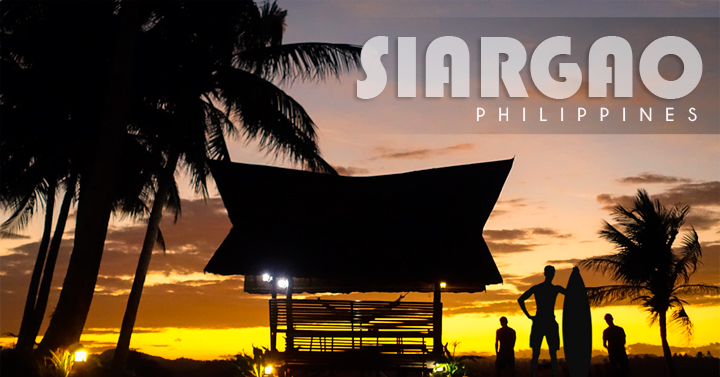
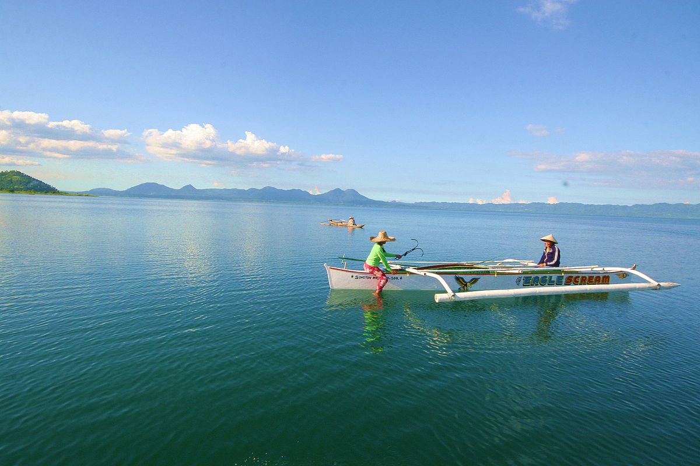
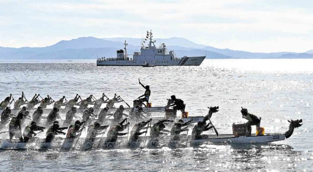

History

The first recorded sighting by Europeans of Siargao Island was by Spanish navigator Bernardo de la Torre
on board of the carrack San Juan de Letrán in 1543 when attempting to
return from Sarangani to New Spain. It was charted as Isla de las Palmas (Palm Island in Spanish).
[3]In 2013, President Noynoy Aquino allocated transparent funds for the modernization of Siargao's airport,
the first ever modern development on the island.[4]On December 16, 2021, Typhoon Rai struck the area as a
Category 5 super typhoon. It left the island devastated, with many buildings damaged or demolished.
It caused ₱20 billion ($400 million) in damages.[5]
Geography

Siargao Island contains one of the largest mangrove forest reserves in Mindanao, covering an area
of 4,871 hectares in Del Carmen.[6] Long stretches of wetlands indicate a potential for commercial
seaweed propagation. The extensive mangrove forests of the western coast in the Del Carmen area
are home to the Indo-Pacific crocodile Crocodylus porosus. A large specimen measuring
14 feet 9 inches (4.50 meters) was found dead in 2016 [7].Siargao Island is greatly influenced
by the winds and currents coming uninterrupted from the Pacific Ocean, intensified by the Mindanao
current running westward through the Siargao Strait. The tide of Siargao is diurnal with tidal
curves typically present, especially on the east coast of the island.The island's Pacific-facing reefs
are situated on the edge of the Philippine Trench, and the extremely deep offshore waters
assure the ocean swells have undiluted power when they encounter the many coral and rock
reefs. Siargao has excellent surfing conditions, particularly during the southwest "habagat"
monsoon from August to December when the prevailing wind is offshore.
Demographics
Political Subdivision
There are twenty (20) municipalities, one (1) city and its capital, 335 barangays
and two (2) congressional districts. District I is composed of 9 municipalities in Siargao
and Bucas Grande Islands. District II on the other hand has the 11 mainland municipalities and the city
of Surigao. Language and Dialects Surigaonon, Cebuano,Boholano, Tagalog and English are the major
languages/dialects spoken in the province. Population and Growth Rate Based on 2015 NSO survey,
the province has a total population of 485,088 with an annual growth rate of 1.76%.
Tourism

Surigao del Sur is a province in the CARAGA Region in Mindanao, with Tandag City as
its capital city.2 The province is known for its mysterious yet amazing tourist spots,
including the Enchanted River, which is considered to be the most mysterious
river in the Philippines where locals believe creatures like fairies, pixies, and mermaids dwell.